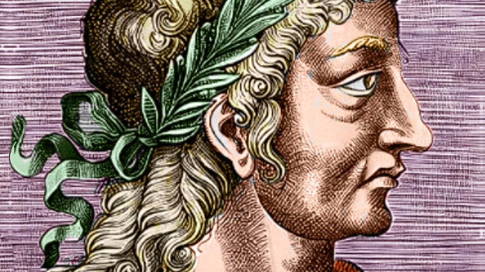
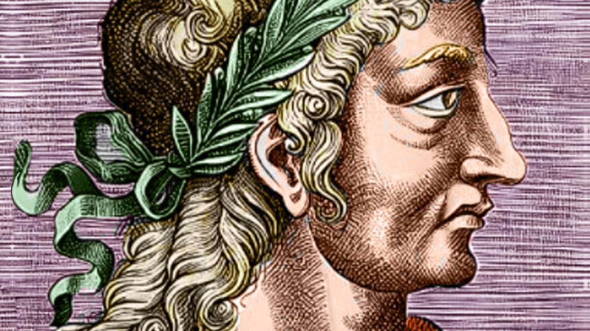

Восхождение на престол
Старый царь Тарквиний Древний умер, однако его дальновидная супруга и верный слуга Сервий скрывали смерть царя от народа. Постепенно народ привык и полюбил воеводу, так он стал царём будучи сыном рабыни.
 

Старый царь Тарквиний Древний умер, однако его дальновидная супруга и верный слуга Сервий скрывали смерть царя от народа. Постепенно народ привык и полюбил воеводу, так он стал царём будучи сыном рабыни.
Граждан Рима разделили на классы в зависимости от их имущества. Они обеспечивали каждый определённое количество центурий. Также Сервий создал 18 центурий всадников, которые имели большое влияние на центуриатных комициях.